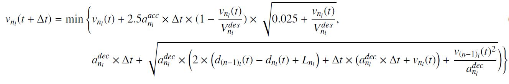
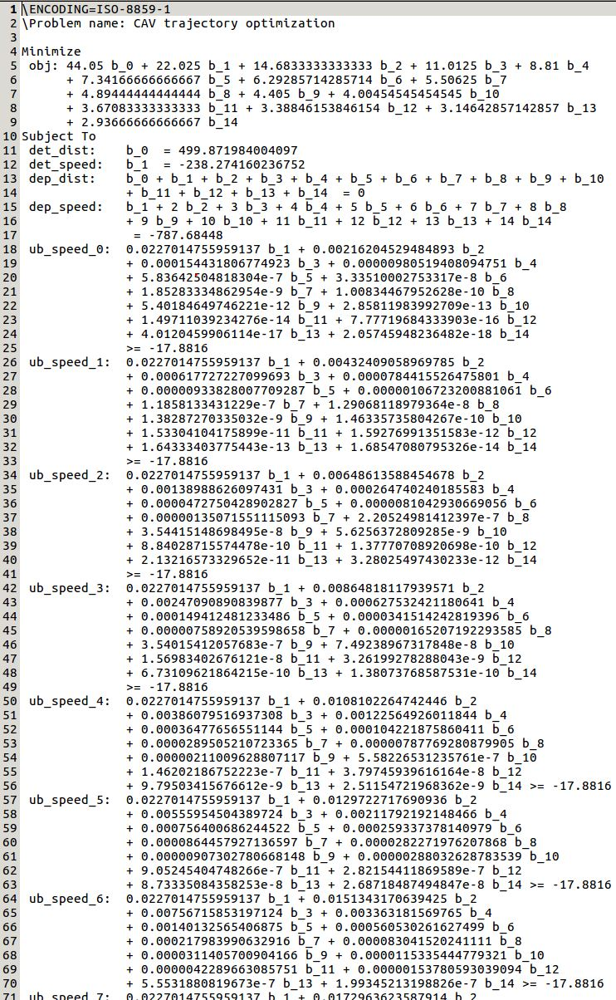

8. Trajectory¶
-
class
src.trajectory.Trajectory(intersection)¶ - Is the abstract class for computing the trajectory points. Four subclasses inherited from this parent class:
Any solve method under each class shall invoke
set_trajectorymethod at the end or does the assignment in-place.Note
If want to limit the trajectory planning, there are two options: - If a particular vehicle is intended to be skipped, simply set
vehicle.reschedule_departuretoFalse- If the whole simulation is intended to be run without trajectory planer, setvehicle.reschedule_departureinsim_main.pyto False.Author: Mahmoud Pourmehrab <pourmehrab@gmail.com> Date: April-2018 -
discretize_time_interval(start_time, end_time)¶ Discretizes the given time interval at the granularity level of trj_time_resolution to an array of time stamps.
Warning
It is inclusion-wise of the beginning and end of the interval.
Author: Mahmoud Pourmehrab <pourmehrab@gmail.com> Date: April-2018
-
static
set_trajectory(veh, t, d, s)¶ Sets trajectory of the vehicle and updates the first and last trajectory point index.
Note
- t,d,s should keep the whole trajectory incusion-wise of the first and the last points because we areseting the first trajectory point index here.
- An assigned trajectory always is indexed from zero as the
veh.set_first_trj_pt_indx.
Parameters: - veh (Vehicle) – the vehicle object that is owns the trajectory
- t – time stamps (seconds from the reference time)
- d – distances at each time stamp (in meters from the stop bar)
- s – speed at each time stamp (in \(m/s\))
Author: Mahmoud Pourmehrab <pourmehrab@gmail.com>
Date: April-2018
-
class
src.trajectory.LeadConventional(intersection)¶ Computes the trajectory for a lead conventional vehicle assuming the vehicle tends to maintain its arrival speed.
Use Case:
Instantiate like:
>>> lead_conventional_trj_estimator = LeadConventional(intersection)
Perform trajectory computation by:
>>> lead_conventional_trj_estimator.solve(veh)
Author: Mahmoud Pourmehrab <pourmehrab@gmail.com> Date: April-2018 -
solve(veh)¶ Constructs the trajectory of a lead conventional vehicle assuming the driver maintains its speed
Parameters: veh (Vehicle) – the lead conventional vehicle Warning
Make sure the assumptions here are compatible with those in
earliest_arr_cnvAuthor: Mahmoud Pourmehrab <pourmehrab@gmail.com> Date: April-2018
-
-
class
src.trajectory.FollowerConventional(intersection)¶ Estimates the trajectory for a follower conventional vehicle assuming a car following model. In the current implementation, Gipps car-following model [1] is used.
Use Case:
Instantiate like:
>>> follower_conventional_trj_estimator = FollowerConventional(intersection)
Perform trajectory computation by:
>>> follower_conventional_trj_estimator.solve(veh, lead_veh)
Author: Mahmoud Pourmehrab <pourmehrab@gmail.com> Date: April-2018 [1] Gipps, Peter G. A behavioural car-following model for computer simulation. Transportation Research Part B: Methodological 15.2 (1981): 105-111 (link). -
static
wiedemann99(lead_d, lead_s, lead_a, lead_l, foll_d, foll_s, foll_s_des, cc0=1.35, cc1=1.1700000000000002, cc2=8.0, cc3=-12.0, cc4=-1.5, cc5=2.0999999999999996, cc6=0.0006, cc7=0.25, cc8=2.0, cc9=1.5)¶ Parameters: - lead_d – lead vehicle distance to stop bar
- lead_s – lead vehicle speed
- lead_a – lead vehicle acceleration rate
- lead_l – length of lead vehicle
- foll_d – follower vehicle distance to stop bar
- foll_s – follower vehicle speed
- foll_s_des – follower vehicle desired speed
- cc0 – Standstill Distance in \(m\)
- cc1 – Spacing Time in \(s\)
- cc2 – Following Variation (max drift) in \(m\)
- cc3 – Threshold for Entering ‘Following’ in \(s\)
- cc4 – Negative Following Threshold in \(m/s\)
- cc5 – Positive Following Threshold in \(m/s\)
- cc6 – Speed Dependency of Oscillation in \(10^-4 rad/s\)
- cc7 – Oscillation Acceleration in \(m/s^2\)
- cc8 – Standstill Acceleration in \(m/s^2\)
- cc9 – Acceleration at 80 \(km/h\) in \(m/s^2\)
Returns: follower next acceleration rate
Author: Mahmoud Pourmehrab <pourmehrab@gmail.com>
Date: May-2018
-
gipps(lead_d, lead_s, lead_l, foll_d, foll_s, foll_s_des, foll_a_min, foll_a_max, lead_a_min, dt)¶ Gipps car following model is implemented. It is written in-place (does not call
set_trajectory)Gipps car following formula.
Warning
Theoretically, caution needed to address the cases where either the term under the square root or one of the speed values in the model becomes negative.
Parameters: - lead_d – lead vehicle distance to stop bar
- lead_s – lead vehicle speed
- lead_l – lead vehicle length
- foll_d – follower vehicle distance to stop bar
- foll_s – follower vehicle speed
- foll_s_des – follower desired speed
- foll_a_min – follower maximum deceleration rate
- foll_a_max – follower maximum acceleration rate
- lead_a_min – lead maximum deceleration rare
- dt – length of time interval the acceleration shall be calculated
Returns: follower next acceleration rate
Author: Mahmoud Pourmehrab <pourmehrab@gmail.com>
Date: April-2018
-
solve(veh, lead_veh)¶ Note
- The only trajectory point index that changes is follower’s last one.
- This method relies on the fact that lead vehicle’s first trajectory point is current.
- Assumed the gap to lead vehicle cannot get lower than a full length of the lead vehicle.
- Compared to W99 requires acc/dec on follower, dec on lead, dt, and does not need lead acc.
- to compute acceleration for lead, we need at least two points to take speed over time difference
Parameters: Author: Mahmoud Pourmehrab <pourmehrab@gmail.com>
Date: April-2018
-
static
comp_speed_distance(t0, d0, v0, a, t, foll_a_min, foll_a_max, next_lead_d, lead_l)¶ If car-following models yielded unreasonable acceleration, fixes it.
Note
Checks for: - Speed should be positive - Acceleration/deceleration constraints should be met - Enforce a gap of equal to length of lead to the lead vehicle
Parameters: - t0 – the time at the beginning of the small interval that acceleration is constant
- d0 – the distance at the beginning of the interval
- v0 – the speed at the beginning of the interval
- a – the constant acceleration rate within the interval
- t – the end time of the interval
Returns: the distance to stop bar and speed at the end of the interval
Author: Mahmoud Pourmehrab <pourmehrab@gmail.com>
Date: April-2018
-
static
-
class
src.trajectory.LeadConnected(intersection)¶ Note
- Trajectory function: \(f(t) = \sum_{n=0}^{k-1} b_n \times (t/t_0)^n\)
- Negative of speed profile: \(f'(t) = \sum_{n=1}^{k-1} n \times b_n \times (t/t_0)^{n-1}\)
- Negative of acceleration profile: \(f''(t) = \sum_{n=2}^{k-1} n \times (n-1) \times b_n \times (t/t_0)^{n-2}\)
Use Case:
Instantiate like:
>>> lead_connected_trj_optimizer = LeadConnected(.)
Perform trajectory computation by:
>>> lead_conventional_trj_estimator.solve(veh)
Author: Mahmoud Pourmehrab <pourmehrab@gmail.com> Date: April-2018 -
set_model(veh)¶ Overrides the generic coefficients to build the specific LP model for the AV trajectory.
This model solves an LP model to compute trajectory of AVs.
Part of a sample CPLEX model.
Parameters: veh (Vehicle) – vehicle object that its trajectory is meant to be computed Returns: CPLEX LP model. Should return the model since the follower optimizer adds constraints to this model Author: Mahmoud Pourmehrab <pourmehrab@gmail.com> Date: April-2018
-
solve(veh, lead_veh, model)¶ Solves an LP model for connected vehicle (both lead and follower)
Parameters: Returns: coefficients of the polynomial for the
vehobject and trajectory points to the trajectory attribute of itAuthor: Mahmoud Pourmehrab <pourmehrab@gmail.com>
Date: April-2018
-
compute_trj_points(f, f_prime, departure_time_relative)¶ Converts the polynomial trajectory to the trajectory points.
Parameters: - f – the coefficients to define trajectory polynomial
- f_prime – the coefficients to define the speed polynomial
- departure_time_relative – span of the trajectory
Returns: t, d, s
Author: Mahmoud Pourmehrab <pourmehrab@gmail.com>
Date: April-2018
-
optimize_lead_connected_trj(veh)¶ Computes a linear trajectory for the vehicle. This case should not happen except for the case the LP has no solution.
Parameters: veh (Vehicle) – subject vehicle Returns: trajectory of subject lead CAV Author: Mahmoud Pourmehrab <pourmehrab@gmail.com> Date: April-2018
{kind=link}
-
class
src.trajectory.FollowerConnected(intersection)¶ Optimizes the trajectory of a follower CAV.
Use Case:
Instantiate like:
>>> follower_connected_trj_optimizer = FollowerConnected(intersection)
Perform trajectory computation by:
>>> model = follower_connected_trj_optimizer.set_model(veh, lead_veh) >>> follower_connected_trj_optimizer.solve(veh, lead_veh)
Parameters: GAP_CTRL_STARTS – This is the relative time (in seconds) when gap control constraints get added Author: Mahmoud Pourmehrab <pourmehrab@gmail.com> Date: April-2018 -
set_model(veh, lead_veh)¶ - Sets the LP model using the extra constraints to enforce the safe headway. Either three cases happen here:
- The lead is a CNV and its trajectory overlaps and it has enough trajectory points
- Enforce the constraint on last m trajectory points of the lead vehicle
- The lead is a CAV and its trajectory overlaps
- Evaluate the polynomial over m points as defined in the paper
- Otherwise
- Relax the constraints (\(0.0 \geq -1.0\) is always true)
Parameters: Returns: the CPLEX LP model to be solved by solve() method
Author: Mahmoud Pourmehrab <pourmehrab@gmail.com>
Date: April-2018
-
solve(veh, lead_veh, model)¶ The only reason this class method exists is to access
optimize_follower_connected_trjmethod.Parameters: Author: Mahmoud Pourmehrab <pourmehrab@gmail.com>
Date: April-2018
-
optimize_follower_connected_trj(veh, lead_veh)¶ Works based on the concept of hypothetical trajectory.
Parameters: Returns: trajectory of the subject follower AV in case the LP has no solution.
Author: Mahmoud Pourmehrab <pourmehrab@gmail.com>
Date: April-2018
-